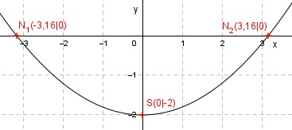

Aufgabe 11 Welche Koordinaten haben der Scheitelpunkt S und die Nullstellen N der folgenden Funktion? y = 0,2x2 - 2 x -4 -2 0 2 4 y 1,2 -1,2 -2 -1,2 1,2 Es ist eine nach oben geöffnete, gestauchte Parabel (Zahl vor dem x2 ist positiv und liegt zwischen 0 und 1). Sie ist symmetrisch zur y-Achse und hat ihren Scheitelpunkt, den tiefsten Punkt, bei S(0|-2).  Da der Scheitelpunkt unterhalb der x-Achse liegt und die Parabel nach oben geöffnet ist, hat sie Nullstellen (Schnittpunkte mit der x-Achse). Nullstellen. (y = 0): 0 = 0,2x2 - 2 |+2 0,2x2 = 2 |:0,2 x2 = 10 |√ x1,2 = ± = ± 3,16